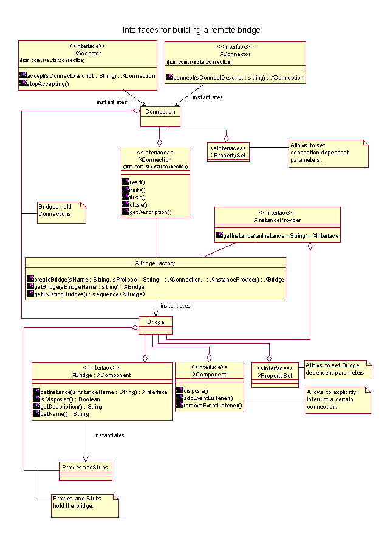

Interprocess bridges |
|
Contents |
||||
|
Overview |
||||
Overview |
||||
|
Interprocess bridges allow executing UNO-calls in a remote process via a byte-stream-connection. Currently, two protocols are available : IIOP(Internet inter-orb-protocol) and URP (uno remote protocol). The IIOP-protocol is still under development, while URP is final. After bootstrapping the bridge and retrieving the first object, uno programming becomes "remote transparent". "Remote transparency" means that the caller does not need to distinguish between remote and local UNO-calls ( and in general, the caller has no way of knowing whether the call is executed remotely or not). |
||||
Description |
||||
Bootstrapping the bridgeFig. 1 shows all necessary services (and their exported interfaces ) to create and use an interprocess bridge. An interprocess bridge can be instantiated via the service com.sun.star.bridge.BridgeFactory using the call XBridgeFactory.createBridge(). The caller needs to pass 4 Arguments to the bridge factory. The first argument is the name of the bridge. When no name is given, an exclusive bridge is created, which means that the bridge cannot be retrieved via the getBridge() method. Giving the bridge a certain name allows another component to reuse the bridge via the getBridge() passing the same name. Unnamed bridges can be safely disposed without bothering other possible users, while named bridges can be reused. The second argument is the protocol string. Up to now, "iiop" and "urp" is supported. Internally, the bridgefactory searches for a service "com.sun.star.bridge.Bridge.protocolname " and creates it. You may provide parameters, following the protocolname and separated with comma(s), to the bridge (currently, there are no parameters supported). The third argument is a reference to an XConnection-interface. The XConnection interface offers simple read/write functions to exchange data with an arbitrary process. The UDK supplies two services to build up a connection between two processes (see acceptor/connector documentation), but one is welcome to use their own implementation. Note that the XConnection-interface does not have methods to initiate a connection, it expects to receive a fully functional connection. Note also, that the bridge expects to be the ONLY USER of the connection, it can't cope with any, in between, read/write calls. The createBridge()-caller may optionally pass an XInstanceProvider-implementation. When the first request from the remote process comes in, the bridge will call the XInstanceProvider.getInstance() method to resolve the first-object. At least one process must provide an XInstanceProvider-implementation ( in general the "server-process"). The resulting object, which is only a wrapper around a C-Interface, exports an XBridge interface. The bridge has three methods, the getInstance() method is the most important one. It allows the "client-process" to retrieve the primary object from the remote process. The passed string may be used to distinguish between different primary objects. The bridge in the remote process will call XInstanceProvider.getInstance( ) to resolve the requested object. On client side, the bridge returns a proxy for the remote object. The uno-programmer cannot distinguish between a proxy object or an original object. The primary object supports, in general, an interface that allows for retrieving other objects (for instance XMultiServiceFactory, XNamingService, or etc.) The bridge also supports the XComponent interface. Calling dispose immediately cancels all ongoing remote calls. See below for further information. Note that "client" and "server" is here used only for convenience. In a distributed environment, one process may act as client and as server at the same time. Lifetime of the bridgeThe bridge remains active as long as there are proxies or stubs (which implicitly hold the bridge). When the last proxy dies, the bridge will dispose itself and close the connection. The bridge can be actively disposed by querying for the XComponent-interface and calling a dispose. This will initiate the shutdown procedure described below. The same procedure is done, when the connection is closed for any external reason. Hard shutdown procedure: The connection is closed immediately. All pending requests will receive a RuntimeException. After all threads have left the bridge, the bridge explicitly deletes all stubs, so that original objects held by the stubs are released. The bridge itself is deleted when the last proxy dies. Note that the main thread may need to synchronize with the other threads in order to safely shutdown an application. Waiting for a certain amount of time after disposing is a dirty but quick solution for the problem. Note that all components must be able to cope with a RuntimeException as a result of an arbitrary UNO-call to allow a safe shutdown.  |
||||
Technical details |
||||
|
This section describes some technical details about an interprocess bridge, that may be important to know for remote programming. Multi-threadingThe whole bridge is threadsafe and allows multiple threads to execute remote calls. The dispatcher thread inside the bridge cannot block because it never executes calls, instead it passes the requests to worker threads. Synchron/Asynchron callsFor a synchron call the bridge sends the request via the connection and lets the requesting thread wait for the reply. All calls that have a return value, an out parameter, or throw exceptions different from the RuntimeException, MUST be synchron.
An asynchron ( or oneway ) call sends the request via the connection and immediately returns, not waiting for a reply.It is currently specified at the IDL-interface, whether a request is synchron or asynchron.
For synchron requests, thread identity is guaranteed. When process A calls process B and process B calls again process A, the same thread waiting in process A will take over the new request. This avoids deadlocks when the same mutex is locked again.
For asynchron requests, this is not possible because there is no thread waiting in process A. Such requests are executed in a new thread. The series of calls between two processes is guaranteed. If two asynchron requests from process A are sent to process B, the second request will wait until the first request is finished. |
||||
Profiling OpenOffice.org |
||||
|
When your Java or C++ extension for OpenOffice.org is too slow, this can often be solved by reducing
redundant API calls. Each API call (Java-C++ inprocess, Java-C++ outofprocess,
C++-C++ outofprocess) involves a bridging overhead, which is about one milli second per call.
(Note that C++-C++ inprocess is not bridged at all and cannot be logged, but it is either way
very fast !).
By using a specially built interprocess bridge, you can log the interprocess calls into a file, in order to analyze them later. I have prepared for Linux,Solaris and windows a shared library, which you simply should copy into the office-program directory (make sure, you have moved away the original one before). They can be downloaded from the files section. They have been built in a OpenOffice.org 1.0 source tree, but should also work in later OpenOffice.org builds and in StarOffice builds. In order to activate logging, you need to set the following environment variables :
set PROT_REMOTE_ACTIVATE=1 set PROT_REMOTE=c:\mylogAfter you have started the office out of this shell, for each newly established bridge a file is created, e.g. c:\mylog_pid1023_0 for an interprocess bridge and c:\mylog_pid1023_1 for the Java-C++ inprocess. Note, that this is only an example, in fact, the last number in the file name gives the order in which the bridges get used. E.g. when you connect from another process to the office, the _0 file will be this interprocess bridge. When you then instantiate a Java service in the office process, the _1 file will appear. In general, a quick look at the methods names in the files tells you, which bridge belongs to which file. Each log file contains the time of calling in milliseconds (since an arbitrary point of time), the bytesize of each call, whether it was synchron or asynchron, and the name of the method, which has been called. e.g. 015572: calling [size=128(usedata=3)] [synchron=1] [name=queryInterface] 015743: getting reply [size=264(usedata=240)][name=queryInterface] 015752: serving request [size=125(usedata=31)] [synchron=1] [name=queryInterface] 015754: replying [size=93(usedata=59)] [name=queryInterface]The log is created in the C++ remote bridge. Therefor the output means e.g. for the Java-C++ inprocess bridge : 'calling' means a call is initiated from the C++-office to an Java object, 'getting reply' means that the call has returned from Java, 'serving request' means that from the Java side a call to a C++ object has been initiated and replying means that this call is now going back to Java. Happy profiling :o). |
||||
|
Author: Joerg Budischewski ($Date: 2004/12/15 12:49:52 $) |